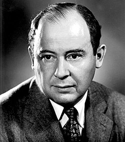

1903–1957
John von Neumann

Portrait: wikispaces, CC BY-SA 3.0, Wikimedia Commons.
Events (8)
- 1907Hilbert space and integral equations
developer · Functional & harmonic analysis
- 1908Axiomatic set theory (Zermelo)
developer · Logic & foundations
- 1928Game theory
originator · Game theory & economics
- 1928Hilbert-space quantum mechanics
originator · Functional & harmonic analysis
- 1930Von Neumann algebras
originator · Group & representation theory
- 1931Ergodic theory from statistical mechanics
developer · Dynamics
- 1939Statistical decision theory
developer · Statistics & decision theory
- 1951Cellular automata and self-reproducing machines
developer · Algorithms & complexity